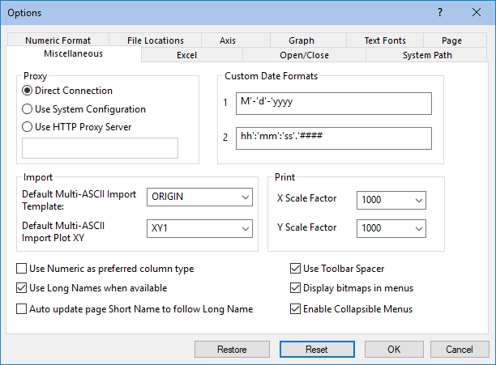

Die Registerkarte Sonstiges (Optionen)
Options-Dialog-Misc-Tab
- 
Gruppe Proxy
Gruppe Benutzerdefiniertes Datumsformat
Diese Gruppe ermöglicht es Ihnen, Ihre eigenen benutzerdefinierten Datumsformate zu definieren. Diese benutzerdefinierten Datumsformate werden in der Auswahlliste Anzeige angezeigt, wenn Datum in der Auswahlliste Format im Dialog Spalteneigenschaften ausgewählt ist. Diese benutzerdefinierten Datumsformate können jedoch weder in einer .ini-Datei noch in einem Projekt gespeichert werden. Sie werden nur in dem definierten Projekt angezeigt, wenn es vom lokalen Benutzer geöffnet wird. Wenn andere Anwender dieses Objekt öffnen, können Sie nicht die gleiche Anzeige auf Ihren Computern sehen.
Wenn Sie ein benutzerdefiniertes Datumsformat angeben, sollten sich nicht mehr als 60 Zeichen in der benutzerdefinierten Zeichenkette für das Datum befinden. "Sandwich"-Formatzeichenketten, wie z.B. ZEIT-DATUM-ZEIT oder DATUM-ZEIT-DATUM, sind nicht erlaubt.
| Geben Sie dies ein... |
Zum Kennzeichnen von... |
Was in Origin angezeigt wird |
|
M
|
Month
|
-
- M = Zahl für den Monat (zum Beispiel: Januar = 1) Trennzeichen (in einzelne Anführungszeichen eingeschlossen) müssen sofort auf dieses Element folgen.
- MM = 2 Stellen für den Monat (zum Beispiel: Januar = 01)
- MMM = Abkürzung mit drei Stellen (zum Beispiel: Jan)
- MMMM = kompletter Monatsname (zum Beispiel: Januar) Trennzeichen (in einzelne Anführungszeichen eingeschlossen) müssen sofort auf dieses Element folgen.
|
|
d
|
Day
|
-
- d = Tag des Monats (zum Beispiel 1) Trennzeichen (in einzelne Anführungszeichen eingeschlossen) müssen sofort auf dieses Element folgen.
- dd = zwei Stellen für den Tag (zum Beispiel 01)
- ddd = Abkürzung für den Tag mit drei Stellen (zum Beispiel Mon)
- dddd = kompletter Tagesname (zum Beispiel Montag) Trennzeichen (in einzelne Anführungszeichen eingeschlossen) müssen sofort auf dieses Element folgen.
|
|
y
|
Year
|
-
- y = die letzte oder die 2 letzten Stellen des Jahres (zum Beispiel: 1901 = 1) Trennzeichen (in einzelne Anführungszeichen eingeschlossen) müssen sofort auf dieses Element folgen.
- y = letzte 2 Stellen des Jahres (zum Beispiel: 1901 = 01)
- yyyy = komplettes Jahr (zum Beispiel: 1901 = 1901)
|
|
h
|
Hour
|
-
- h = Stunden ohne Null am Anfang für einstellige Stundenangaben; 12-Stunden-Uhr Trennzeichen (in einzelne Anführungszeichen eingeschlossen) müssen sofort auf dieses Element folgen.
- hh = Stunden mit Null am Anfang für einstellige Stundenangaben; 12-Stunden-Uhr
|
|
H
|
Hour
|
-
- H = Stunden ohne Null am Anfang für einstellige Stundenangaben; 24-Stunden-Uhr Trennzeichen (in einzelne Anführungszeichen eingeschlossen) müssen sofort auf dieses Element folgen.
- HH = Stunden mit Null am Anfang für einstellige Stundenangaben; 24-Stunden-Uhr
|
|
m
|
Minute
|
-
- m = Minuten ohne Null am Anfang für einstellige Minutenangaben Trennzeichen (in einzelne Anführungszeichen eingeschlossen) müssen sofort auf dieses Element folgen.
- mm = Minuten mit Null am Anfang für einstellige Minutenangaben
|
|
s
|
Sekunden
|
-
- s = Sekunden ohne Null am Anfang für einstellige Sekundenangaben Trennzeichen (in einzelne Anführungszeichen eingeschlossen) müssen sofort auf dieses Element folgen.
- ss = Sekunden mit Null am Anfang für einstellige Sekundenangaben
|
|
#
|
Dezimalstellen nach den Sekunden |
-
- # = eine Stelle nach dem Dezimalpunkt für die Sekunden
- ## = zwei Stellen nach dem Dezimalpunkt für die Sekunden
- ### = drei Stellen nach dem Dezimalpunkt für die Sekunden
- #### = vier Stellen nach dem Dezimalpunkt für die Sekunden
|
|
t
|
Zeitmarkierung
|
-
- t = Zeichenkette mit einem Zeichen für die Zeitmarkierung wie A oder P
- tt = Zeichenkette mit mehreren Zeichen für die Zeitmarkierung wie AM oder PM
|
Beispiele für benutzerdefinierte Datumsformate
Um eine benutzerdefinierte Datumsauswahl zu erstellen, die im folgenden Format angezeigt wird:
Samstag, 5. September 1998
geben Sie ein:
'dddd', 'MMM' 'd', 'yyyy'
Diese Elemente in der benutzerdefinierten Datumszeichenkette müssen in Großbuchstaben oder Kleinbuchstaben geschrieben sein (zum Beispiel: "MM" nicht "mm" für Monate). Elemente in der benutzerdefinierten Datumszeichenkette können durch jedes alphanumerische Zeichen, das oben nicht aufgelistet ist, getrennt werden. Falls ein Element nicht deutlich angibt, wie viele Zeichen bei der Eingabe erwartet werden, muss darauf direkt ein in einfache Anführungszeichen gesetztes Leerzeichen folgen. Falls dieses Element das letzte in der Datumszeichenkette ist, muss das Leerzeichen nicht in einfache Anführungszeichen gesetzt werden. Trennzeichen werden am gleichen Ort in der Arbeitsblattanzeige erscheinen. Einfache Anführungszeichen werden allerdings nicht angezeigt. Sie können keine zwei Trennzeichen nebeneinander in einfache Anführungszeichen setzen. Zum Beispiel ist "ddd '|' '-'MMM" nicht möglich.
Wenn ein Leerzeichen in einfache Anführungszeichen eingeschlossen ist, wird es zum Analysieren verwendet. Dies bedeutet, dass die Daten, die in die Zellen eingesetzt werden, dieselbe Anzahl an Zeichen zwischen den Datenwerten besitzen müssen wie die, die in den einfachen Anführungszeichen eingeschlossen sind. Falls Sie Leerzeichen zu den Daten hinzufügen möchten, die diese nicht bereits besitzen, verwenden Sie in der benutzerdefinierten Datumszeichenkette nicht in Anführungszeichen gesetzte Trennzeichen. Diese Trennzeichen werden allerdings nur für die Anzeige und nicht bei der Analyse der Eingabe der Datums-/Zeitzeichenkette verwendet. Sehen Sie sich die Beispiele in der folgenden Tabelle an.
| Benutzerdefiniertes Datum |
Eingabe |
Ausgabe |
Hinweise |
|
MM dd
|
0416
|
04 16
|
Das nicht in Anführungszeichen gesetzte Leerzeichen wurde bei der Analyse ignoriert. Daher entsprach die Eingabe ausschließlich dem Format.
|
|
MM' 'dd
|
02 12
|
02 12
|
Das Format erwartet nur ein Leerzeichen als Trennzeichen, aber es ist zulässig, weitere Leerzeichen innerhalb der Zeichenkette zu verwenden.
|
|
MM' 'dd
|
0212
|
--
|
Es wurde ein Leerzeichen als Trennzeichen erwartet, daher ist die Analyse gescheitert.
|
Gruppe Importieren
| Standardvorlage für Mehrfachimport ASCII |
Die Bedienelemente des Auswahlfeldes steuern die verwendete Standardvorlage der Arbeitsmappe, wenn mehrere ASCII-Dateien in mehrere Arbeitsmappen importiert werden.
|
| Standarddiagramm XY bei Mehrfachimport ASCII |
Diese Bedienelemente des Auswahlfeldes steuern die Standardeinstellung in der Liste Zielspalte für Zeichnung im unteren Bedienfeld des Dialogs Mehrfachimport ASCII (Dieser Dialog wird durch Klicken auf die Schaltfläche _Miscellaneous_Tab/Button_Import_Multiple_ASCII.png) auf der Symbolleiste Standard bei aktiviertem Grafikfenster geöffnet). Dieser Wert legt die Standarddiagrammzuordnungen für Daten fest, die direkt in das Diagramm importiert werden. auf der Symbolleiste Standard bei aktiviertem Grafikfenster geöffnet). Dieser Wert legt die Standarddiagrammzuordnungen für Daten fest, die direkt in das Diagramm importiert werden.
-
- Origin importiert alle Spalten. Dabei nimmt Origin an, dass die erste Spalte die X-Werte umfasst und alle verbleibenden Spalten die Y-Werte enthalten. In diesem Fall zeigt die "1" an, dass der letzte Buchstabe "Y" für alle verbleibenden Spalten wiederholt wird.
- Origin ignoriert die erste Datenspalte und importiert dann den Rest der Datei entsprechend der Regeln von XY1.
- Origin importiert die erste und die zweite Spalte als X- bzw. Y-Werte.
- Origin importiert alle Spalten. In diesem Fall nimmt Origin allerdings an, dass die erste Spalte die X1-Werte, die zweite Spalte die Y1-Werte, die dritte Spalte die X2-Werte, die vierte Spalte die Y2-Werte usw. enthält. In diesem Fall zeigt die "2" an, dass die letzten zwei Buchstaben "X" und "Y" für alle verbleibenden Spalten wiederholt werden.
- Origin wird die erste, zweite und dritte Spalte als X-, Y- bzw. Y-Fehler-Werte importieren.
- Origin wird die erste, zweite und dritte Spalte als X-, Y- bzw. Z-Werte importieren.
|
Gruppe Drucken
| X-Skalenfaktor |
Dieser Wert des Auswahlfelds legt die X-Skala-Anpassung zum Drucken fest. Bearbeiten Sie den Standardwert, wenn Ihr Drucker kein Diagramm mit der Breite, die im Textfeld Breite auf der Registerkarte Größe/Performance des Layer-Dialogfelds Details Zeichnung eingegeben ist, erstellt.
Wenn Sie beispielsweise eine Breite von 6 Zoll im Textfeld Breite angeben, Ihr Drucker aber eine Breite von 6,0625 Zoll druckt, setzen Sie den Wert im Auswahlfeld Faktor X-Skala auf 1010, da gilt (6,0625*1000)/6=1010.
|
| Faktor Y-Skala |
Dieser Wert des Auswahlfelds legt die Einstellung der Y-Skala zum Drucken fest. Bearbeiten Sie den Standardwert, wenn Ihr Drucker kein Diagramm mit der Höhe, die im Textfeld Höhe auf der Registerkarte Größe/Performance des Layer-Dialogfelds Details Zeichnung (obiges Beispiel) eingegeben ist, erstellt.
|
Zusätzliche Bedienelemente
| Standardformat für Spalten = Numerisch |
Dieses Kontrollkästchen steuert, ob alle Spalten in allen neuen Arbeitsblättern vom Typ Numerisch oder Text & Numerisch (Standard) sind. Wenn Sie planen, Ihr Origin-Projekt mit einem Kollegen, der Origin 4.1 verwendet, zu teilen, sollten Sie dieses Kontrollkästchen aktivieren. Tun Sie dies nicht, kann es zu einem Datenverlust kommen, wenn dieses Projekt unter Origin 4.1 geöffnet wird.
|
| Symbolleisten-Platzhalter verwenden |
Aktivieren Sie dieses Kontrollkästchen, um einen Symbolleisten-Platzhalter unter der Menüleiste anzuzeigen. Der Symbolleisten-Platzhalter stellt sicher, dass der Symbolleistenbereich bei einer festen Breite bleibt, wenn das aktive Fenster gewechselt wird. Die Höhe des Symbolleisten-Platzhalters wird durch die maximale Höhe festgelegt, die benötigt wird, um alle ausgewählten Symbolleisten für jedes der Fenster innerhalb dieses Projekts anzuzeigen (Um den Symbolleisten-Platzhalter zu verbergen, klicken Sie mit der rechten Maustaste in den Bereich des Symbolleisten-Platzhalters und wählen Sie im Kontextmenü Symbolleisten-Platzhalter verbergen aus).
|
| Langnamen verwenden, wenn verfügbar |
Wenn dieses Kontrollkästchen aktiviert ist, zeigt Origin Mappen- und Spaltenlangnamen, wenn diese definiert sind, in der Diagrammliste des Dialogs Diagrammeinstellungen (Grafik: Setup Diagramm), in der Datenliste unten im Menü Daten und im linken Bedienfeld des Dialogs Details Zeichnung.
|
| Bitmaps in Menüs zeigen |
Dieses Kontrollkästchen steuert, ob Bitmaps neben den Menübefehlen angezeigt werden sollen oder nicht. Menübefehle, die Zugang zu Symbolleistenschaltflächen haben, besitzen Bitmaps, die links neben dem Befehl angezeigt werden.
|
| Automatisches Anpassen des Seiten-Kurznamens an den Langnamen |
Wenn dieses Kontrollkästchen aktiviert ist, wird Origin automatisch den Kurznamen der Seite wie zum Beispiel eine Arbeitsmappe ändern, um ihn dem Langnamen anzupassen. Der Langname könnte abgeschnitten und spezifische Zeichen innerhalb des Langnamens entfernt werden, um einen gültigen, äquivalenten Kurznamen zu erstellen.
|
| Minimierbare Menüs aktivieren |
Haupt- und Kontextmenüs in Origin sind standardmäßig minimiert. Verwenden Sie das Kontrollkästchen, um die Option ein- und auszuschalten. Weitere Informationen zu minimierbaren Menüs erfahren Sie in der entsprechenden FAQ.
|